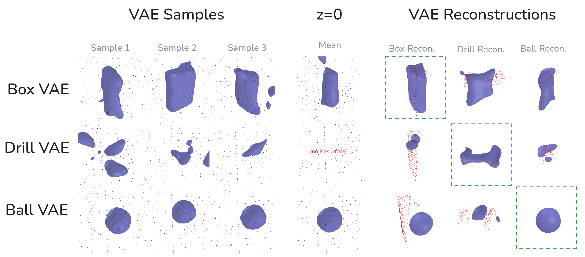

2024 Aug 30
Last time, the idea was for me to reconstruct objects from 3 different classes by throwing a Gaussian on top of their weights. I did this, but the Gaussian didn’t have the best results. Eventually, I trained a VAE per class and was able to (kind of) get what I was looking for.
Training:
Testing:
My Guess: The Gaussian per object is probably too wide / not expressive enough
Training: train a VAE [1] in the standard way on the already-fit weights. We will have p(z)=\mathcal N(0, I).
Inference: do optimization-based inference in a Bayesian manner similar to V-PRISM [2]. Instead of an EM algorithm, employ Stein Variational Gradient Descent [3] all the way through to the z embedding:
We would be optimizing for z_j particles instead of w_j. We could use a Gaussian kernel with the standard normal as the prior (p(z)).
Related Work: There have been some work using VAEs during 3D reconstruction tasks

Note: I did not do this, but it might make sense to scale down the weight vectors that I train on, because the 0.5 isosurface should be the same if you do that by nature of \sigma(0) = 0.5 staying the same.
Accurate Reconstructions
Uncertainty / Diversity in Reconstructions
Handling Multiple Objects
I want to do the following next week:
Also: Should I be worried about IROS?